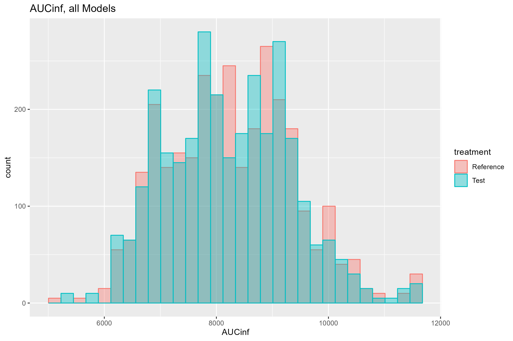
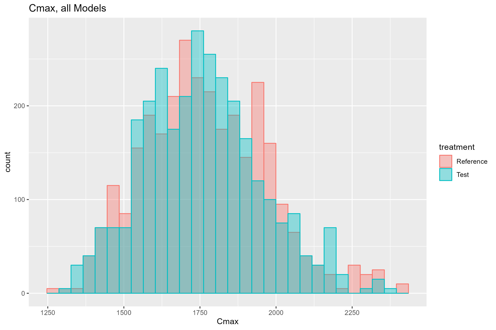

Several files are needed for execution of the MBBE package. These are:
Model files. Standard NONMEM control files, one or more describing one or more candidate models to be averaged.
Data file(s) - one or two. An analysis data set for the NONMEM model estimation in the bootstrap step is required. In addition, a data file for simulation of the intended virtual BE study is typically used. The analysis and simulation data sets may be the same file.
The MBBE specification file. A json format file describing the analysis methods and parameters.
(Optional) User supplied R code that returns a value that can be added to the default model selection criteria (BIC) used for model averaging. Must be called “RPenaltyCode.R”.
Five models are provided with the MBBE package. Any number of model > 1 can be used, bearing in mind that the total number of bootstrap samples will be the number of models x the bootstrap sample size. In the present example, models were selected using pyDarwin. Example models (model1.mod - model5.mod) are at:
[1] "C:/Users/jcraig/AppData/Local/R/win-library/4.3/mbbe/examples/model1.mod"
[2] "C:/Users/jcraig/AppData/Local/R/win-library/4.3/mbbe/examples/model2.mod"
[3] "C:/Users/jcraig/AppData/Local/R/win-library/4.3/mbbe/examples/model3.mod"
[4] "C:/Users/jcraig/AppData/Local/R/win-library/4.3/mbbe/examples/model4.mod"
[5] "C:/Users/jcraig/AppData/Local/R/win-library/4.3/mbbe/examples/model5.mod"Let’s view an example model file:
[1] "$PROBLEM Simulated"
[2] "$INPUT ID TIME AMT DROP CMT CMTT DV WT EGFR AGE COV1 COV2 EVID"
[3] " PERIOD GROUP TRT SEQ"
[4] "$DATA data.csv IGNORE=@ REWIND"
[5] "$OMEGA"
[6] " 1 FIX ; ETA(1) CL"
[7] " 1 FIX ; ETA(2) V2"
[8] "$OMEGA BLOCK(1) FIX"
[9] " 1 ; ETA(3) BOVV"
[10] "$OMEGA BLOCK(1) SAME"
[11] "$OMEGA BLOCK(1) SAME"
[12] "$OMEGA BLOCK(1) SAME"
[13] "$SIGMA 1 FIX"
[14] ";;;; Start subs"
[15] "$SUBROUTINE ADVAN4"
[16] "$PK"
[17] " CWTKG\t= WT/70"
[18] " CAGE\t= AGE/24"
[19] " CEGFR\t= EGFR/100"
[20] " CCOV1\t= COV1/10"
[21] " CCOV2 = COV2/10"
[22] " IF(PERIOD.EQ.1) BOVV = EXP(THETA(14))*ETA(3)"
[23] " IF(PERIOD.EQ.2) BOVV = EXP(THETA(14))*ETA(4)"
[24] " IF(PERIOD.EQ.3) BOVV = EXP(THETA(14))*ETA(5)"
[25] " IF(PERIOD.EQ.4) BOVV = EXP(THETA(14))*ETA(6)"
[26] " ;; COVARIATE POWER MODEL WITH COVARIATE CENTERED AT 1 CAN BE +IVE OR -IVE"
[27] " TVCL\t= EXP(THETA(1)) *CWTKG**THETA(15) *CAGE**THETA(16) *CEGFR**THETA(17)"
[28] " CL \t= TVCL*EXP(EXP(THETA(4))*ETA(1))"
[29] " TVV\t= EXP(THETA(9)) *CWTKG**THETA(18) *CCOV2**THETA(19)"
[30] " V2 \t= TVV *EXP(EXP(THETA(5))*ETA(2))*EXP(BOVV)"
[31] " IF(TRT.EQ.1) THEN ;; REFERENCE"
[32] " TVKA \t= EXP(THETA(6))"
[33] " F1\t\t= 1"
[34] " ALAG1\t= EXP(THETA(12))"
[35] " ELSE ;; TEST"
[36] " TVKA \t= EXP(THETA(7))"
[37] " F1 \t= EXP(THETA(8))"
[38] " ALAG1\t= EXP(THETA(13))"
[39] " END IF"
[40] " S2 \t= V2/1000 \t; CONC IN NG/ML (MCG/L), DOSE IN MG, VOL IN L"
[41] " K\t= CL/V2"
[42] " KA \t= TVKA"
[43] " K32 \t= EXP(THETA(10))"
[44] " K23\t= EXP(THETA(11))"
[45] ""
[46] "$ERROR"
[47] " IPRED \t= F"
[48] " ADD \t\t= EXP(THETA(2)) ;; NEEDS TO BE HERE, TO EDIT IN SPPC"
[49] " PROP \t\t= EXP(THETA(3))"
[50] " SD \t\t= SQRT(PROP**2*IPRED**2 + ADD**2) ; Residual weight ADD AND P PROP IN SD AND CV UNITS, NOT VARIANCE"
[51] ""
[52] " Y \t\t= IPRED + SD*EPS(1)"
[53] ""
[54] " ;;;; Start EST"
[55] "$ESTIMATION METHOD=0 MAX=9999 NOABORT PRINT=50"
[56] "$THETA"
[57] " (-0.1,0.217655,1 ) \t\t ; THETA(1) LN(CL)"
[58] " -8.01311 \t \t; THETA(2) ADD ERROR"
[59] " -2.97418 \t\t ; THETA(3) PROP ERROR"
[60] " -2.11537 \t\t ; THETA(4) LN(BSV) CL"
[61] " -2.08401 \t\t ; THETA(5) LN(BSV) V2"
[62] " (-2,-0.999677,1) \t\t; THETA(6) LN(KA) reference"
[63] " (-2,-1.00021,1) \t\t; THETA(7) LN(KA) test"
[64] " (-2,-0.00145444,1)\t; THETA(8) LN(F1) TEST"
[65] " (-0.4,0.0907959,2) \t\t; THETA(9) init for V2"
[66] " (-4,3.86313,5)\t; THETA(10) LN(K32)"
[67] " (-5,-4.98,5) \t; THETA(11) LN(K23)"
[68] " (-2,-0.500031,1)\t; THETA(12) LN(ALAG) REFERENCE"
[69] " (-2,-0.501282,1) \t; THETA(13) LN(ALAG) test"
[70] " (-10,-9.95133,1) \t; THETA(14) BOVV"
[71] " -0.0580956 \t; THETA(15) CL~WT"
[72] " 0.466584 \t\t; THETA(16) CL~AGE"
[73] " -2.01063 \t\t; THETA(17) CL~EGFR"
[74] " 0.0318797 \t\t; THETA(18) V~WT estimated"
[75] " -0.117087 \t\t; THETA(19) V~COV2"
[76] ""
[77] "$TABLE ID TIME GROUP TRT DV IPRED EVID PERIOD SEQ NOPRINT FILE=DATA.TXT NOHEADER NOAPPEND" These model need not have a $COV record (unless that is needed for any user defined R code). There are few restriction on the structure of the model. However, there are a significant number of requirement for both the control file and data file format. It is recommended that the full path to the data set be provided in the $DATA record.
There are four critical requirements of the model files data sets. There are:
TRT (treatment)
GROUP
PERIOD
SEQ (sequence)
Note, these data items must be provided in the analysis data set as well as the simulation data set, even if they are not used. The GROUP (treatment and reference groups) must be used in the model. However, PERIOD and SEQ need not be included in the analysis model (and so can be all the same values, e.g., all “1”s). All four data items need to be included in the simulation data set (reflecting the multiple period cross over study design), and so must also be in the analysis data set and the $INPUT record in the analysis control file(s).
C:/Users/jcraig/AppData/Local/R/win-library/4.3/mbbe/inst/examplesThe $ESTIMATION record, followed by the $THETA block MUST be the final two blocks in the control file (with the exception of any $TABLE records that might be needed for any user supplied R code).
The line
|;;;; Start EST.
must appear immediately before the $EST record. The reason for these two requirements is that the simulation control files are constructed from the analysis control files. All content in the analysis control file is copied, then everything after the line
|;;;; Start EST
is removed and replace with a $SIM record, followed by the theta estimates extracted from the .xml file for that model and bootstrap sample. A $TABLE record is then added, with data items required for the power calculation. Note that this $TABLE record appended to the simulation control file will include:
TRT
GROUP
PERIOD
SEQ
and so these data must be available, either (preferably) in both the analysis and simulation data sets or calculated in the analysis control file. In addition the $DATA record is edited (programmatically by the R code) to reference the simulation data set, rather than the analysis data. Note that the $INPUT record is preserved unchanged between the user provided analysis control file and the generated simulation control file, and so the structure of the analysis and simulation data sets must be the same.
If identifiability check is requested, then the option “SADDLE_RESET=1” must be included in the $ESTIMATION record of the analysis control file.
Two formatted data set are provided here:
C:/Users/jcraig/AppData/Local/R/win-library/4.3/mbbe/inst/examples/data.csv
C:/Users/jcraig/AppData/Local/R/win-library/4.3/mbbe/inst/examples/data_sim.csvNote that, in this case, these two data sets are identical. In general, the analysis data set, for bootstrap, will not be the same as the simulation data. For example, it may be the case that only sparse data may be available for analysis (e.g., clinical scenarios were few samples can be collected), or a cross over study may not be feasible (e.g., long acting injectable drugs). Still the simulation must be done using a traditional study design, e.g., 4 period, cross over study. The typical scenario is to use a different study design that the study(ies) that generated the analysis data, assuming that if the analysis data were from an adequate BE study, those data would be used to assess BE, rather than MBBE.
The analysis data set is specified on the $DATA record in the NONMEM control files for the bootstrap. The simulation data set is specified as in the MBBE specification file:
C:/Users/jcraig/AppData/Local/R/win-library/4.3/mbbe/inst/examples/mbbeargs.jsonSeveral notes on the data:
As discussed above, data item for “GROUP” (1,2 are reference, 3,4 are test in the examples) are included both in the analysis data set and the simulation data set. This is the simplest way to include these required variables in the simulation and analysis. The example simulation data set (data_sim.csv) and the source data set (data.csv) are both 4 period cross over studies, and so there are 4 values for group (although only 2 formulations). It is not a requirement that the source data be a typical 4 period cross over study, although data for both test and reference formulation need to be included in order to estimate any formulation effects.
Data item for “PERIOD” is provided (1-4). In general, between occasion variability (e.g., by study period) should be assessed and included in the model(s) if supported. The PERIOD data item is recommended in both the analysis and simulation data sets. If it is not included in the data set it must be calculated in the control file so it can be included in $TABLE output for the simulations,
Data item for sequence (“SEQ”) is provided (1-2). Presumably, period and sequence were tested in the model selection and not found to be supported. However, similar to PERIOD, SEQ is required for the Monte Carlo simulation and statistical testing to be available for output in the $TABLE step.
The model averaging is, by default, based on the Bayesian Information criteria (BIC), with the option to exclude any results that fail the Identifiability test. Another, more general option is to include a user defined R function, to return a penalty that is added to the BIC. The path to the file containing this function can be specified in the R_code_path option in the MBBE specification file, and the user_R_code option set to “true”. The function must be called MBBE_RPenaltyCode, and take the arguments:
run_dir - the parent run directory, as specified in the MBBE specification file
this_model - the model number
this_samp - the bootstrap sample number.
These arguments can then be used to access any output from the NONMEM bootstrap model, such the .lst file, the .xml file. The path to the model output files (.xml, .lst, .ext etc., as well as any $TABLE output) will be
run_dir/modelM/N
Where run_dir is the run directory (run_dir) specified in the MBBE specification file, M is the model number and N is the bootstrap sample number. The NONMEM output (.lst) and xml (.xml) files will be called:
bsSampM_N.lst
and bsSampM_N.xml
respectively, where M is the model number and N is the bootstrap sample number. Other standard NONMEM output (e.g., .ext, .cor etc.) are similarly named. Any $TABLE file output, including $SIM output, that is specified in the analysis control files can be accesses as well, using the file structure information described above.
The user defined R function should return, in all case, a numeric penalty. An example R script to return a penalty for bias in simulated Cmax is given in RPenaltyCode.R. This function requires that a 2nd problem (for simulation) be included in the control files. An example where RPenaltyCode.R returns a penalty for bias in prediction of Cmax is given in:
C:/Users/jcraig/AppData/Local/R/win-library/4.3/mbbe/inst/example/RPenaltyCode.RAn example MBBE specification file is given at:
C:/Users/jcraig/AppData/Local/R/win-library/4.3/mbbe/inst/examples/mbbeargs.jsonThe json file consists of key-value pairs. All pairs are required, except “R_code_path”: is not required if “user_R_code”: if set to false.
The key-value pairs are:
(string) parent directory where NONMEM is to be run. The bootstrap runs will be executed in run_dir/modelM/N.
Where M is the model number and N is the bootstrap sample number. The output (.lst) and xml (.xml) files will be bsSampM_N.lst and bsSampM_N.xml.
(list) A list of paths to the candidate models. JSON syntax for list is: [“path1”, “path2, …]. Note that separator in path will be forward slash “/” for any operating system.
(integer) Number of NONMEM executions to be run in parallel. In general should not exceed the number cores.
(numeric) A value to be assigned to the model selection criteria if the calculation fails. Should be larger than any anticipated value for BIC + any R penalty.
(string) Path to nmfe??.bat. Note that separator in path will be forward slash “/” regardless of operating system.
(numeric) Largest absolute fractional difference between any parameters before and after the SADDLE_RESET that is permitted. Any model/sample with a value larger than delta_parm will result in a failed identifiability test for that model/sample and will be excluded for the model averaging. If all models for a given sample fail the identifiability test, that sample is excluded from the Monte Carlo simulation.
(string) Path to simulation data set. Note that the separator in path will be operating system dependent, as this text is simply copied unchanged into the $INPUT record.
(string)- strategy for running R parallel. Options are:
sequential: Resolves futures sequentially in the current R process, e.g. plan(sequential).
multisession: Resolves futures asynchronously (in parallel) in separate R sessions running in the background on the same machine, e.g. plan(multisession) and plan(multisession, workers = 2).
multicore: Resolves futures asynchronously (in parallel) in separate forked R processes running in the background on the same machine, e.g. plan(multicore) and plan(multicore, workers = 2). This strategy is not supported on Windows.
(string) “study” | “subject”. “study” is recommended, “subject” is experimental.
The start date and time of each event in the MBBE process will be listed. The initial output from MBBE describes the options for running MBBE and results of checks.
When the bootstrap starts, MBBE will print out a progress line that describes what percent of the bootstrap models have been started. Completion of the bootstrap step will occur after all the models are started, and then completed.
Various status update message will be displayed as the bootstrap is completed, model parameters are collected, if requested, user supplied R code penalty etc.
Once the BIC and total penalty values are calculated, they will be displayed.
When available, the estimated power for Cmax, AUClast and AUCinfinity will be displayed and the number of bootstrap sample for each model that are identifiable is output.
Finally, the statistical output includes, for each Monte Carlo simulation, whether the parameters (Cmax, AUClast and AUCinfinity) are bioequivalence, the ratio for each and the upper and lower limits of the confidence interval for the ratio.
Comma separated value (.csv) files with BIC values will be written to
run_dir/BICS.csv
and total penalties written to
run_dir/Total_penalties.csv
where run_dir is the run directory specified in the MBBE specification file.
The power for each parameter is written out to the file
run_dir/MBBEpower[data-time].csv
where [data-time] is the analysis completion date and time.
All statistical results are written to run_dir/All_results.csv.
An example can be run using the provide control files, data sets and mbbe options file with the command:
mbbe::run_example(run_dir, nmfe??.bat, Include_R_Code, plan)
where:
run_dir (string) is the parent directory for NONMEM execution
nmfe??.bat (string) is the full path to the nmfe??.bat file, where ?? is the NONMEM version (e.g., c:/nmfe74/util/nmfe74.bat)
Include_R_Code = (logical), whether to include the (provided) script for a penalty in the model averaging. R script can be found in the file RPenaltyCode.r in run_dir. Default value is FALSE
plan is one of “sequential”, “multicore”, “multisession” with a default of “multisession”
The num_parallel will be set to the (number of cores - 1) or 1 if there is only 1 core, and the analysis executed. Execution on a 32 core machine with Include_R_Code set to FALSE takes ~4 minutes and ~8 minutes on a 4 core machine. The sample size for the bootstrap and Monte Carlo simulation is set to only 4, which will give a very poor estimate of power. To reduce execution time, the FO method is used for the bootstrap, rather than FOCEI.
Once the command is issued, the code will check if the run directory (run_dir) is present, and if so, will ask permission to delete it. The dialog that appears for ask permission may not be on top. If the directory needs to be deleted, click the “OK” button.
Once started, various checks are performed and display of many of the analysis parameters including the path(s) to the analysis model(s). An example, where the run_dir is set to c://mbbe_ex is given below.
if c:/mbbe_ex exists, a dialog will appear asking permission to remove it, it may not be on top
No additional penalty for model averaging will be used
MBBE will be run 7 x parallel
Estimated run time for example = 14 minutes
Example mbbe arguments file is at c:/mbbe_ex/example.json
2023-11-21 11:33:12 Start time
Model file(s) =
c:/mbbe_ex/model1.mod
c:/mbbe_ex/model2.mod
c:/mbbe_ex/model3.mod
c:/mbbe_ex/model4.mod
c:/mbbe_ex/model5.mod
reference groups = 1, 2
test groups = 3, 4
Run Directory = c:/mbbe_ex/example
Number of groups = 4
Model averaging will be by study
Bootstrap/Monte Carlo sample size = 5
nmfe??.bat path = c:/nm74g64/util/nmfe74.bat
Use_check_identifiability = FALSE
Narrow Therapeutic Index = FALSE
Alpha error rate for bioequilvalence testing = 0.05
Number parallel runs for bootstrap, simulations and NCA = 7
Simulation data set = c:/mbbe_ex/data_sim.csv
Simulation data path = c:/mbbe_ex/data_sim.csv
Not using post run R code for model averaging selection
After displaying the analysis parameters and options, the list of file outputs will be displayed, e.g.,
BICs values will be written to c:/mbbe_ex/example/BIC.csv
Total Model averaging penalties will be written to c:/mbbe_ex/example/Total_penalties.csv
After that, the parameter values will be checked for consistent, the path(s) to nmfe??.bat and the R code if requested will be checked. If requirements are passed, the message:
Passed requirements check
will be displayed, otherwise error messages will be shown.
Once the checks are execution will begin, with messages about copying the control files, sampling the data and starting the bootstrap model runs. During the bootstrap model runs, a progress bar will be shown, based on the number of bootstrap models started (not finished).
Once the bootstrap model runs are done, the BIC values will be displayed, e.g.,
BICS =
Model1 Model2 Model3 Model4 Model5 Best Max_Delta_parm Max_Delta
1 9624.202 9643.253 9626.252 9650.211 9643.971 1 -999 -999
2 9653.113 9696.959 9653.207 9658.488 9651.800 5 -999 -999
3 9272.172 9354.862 9272.172 9318.539 9304.562 1 -999 -999
4 9731.254 9779.648 9731.458 9754.807 9771.924 1 -999 -999
5 9147.007 9181.334 9143.620 9167.294 9155.821 3 -999 -999
In this case, identifiability was not requested and so the Max_Delta_parm and Max_Delta are not available (value = -999).
After the BIC values the total penalties (which is BIC+ any penalty from the user supplied R code) will be displayed. In this case, as no use supplied R code is used, they will be the same as the BICs.
Total Penalties for bootstrap models =
Model1 Model2 Model3 Model4 Model5
1 9624.202 9643.253 9626.252 9650.211 9643.971
2 9653.113 9696.959 9653.207 9658.488 9651.800
3 9272.172 9354.862 9272.172 9318.539 9304.562
4 9731.254 9779.648 9731.458 9754.807 9771.924
5 9147.007 9181.334 9143.620 9167.294 9155.821
Next, messages will appear about the simulations, and a progress bar reflecting the number simulations
that have started. After simulations are done, the NCA parameters from the simulations are calculated. Histograms are generated from these NCA parameters (Cmax, AUCinf and AUClast). The path to these plots are displayed:
2023-11-21 11:39:32 Plots are saved in c:/mbbe_ex/example
The elapse time is then shown, and the power for finding BE is given for Cmax, AUClast and AUCinf:
$Cmax_power
Power
1 1
$AUClast_power
Power
1 1
$AUCinf_power
Power
1 1
The number of samples for each model that are identifiable is printed, and finally the NCA statistics (Ratios of reference to test, upper and lower limits and whether BE is shown) are printed
$NCA_stats
Cmax_BE Cmax_Ratio Cmax_lower_CL Cmax_upper_CL AUClast_BE AUClast_Ratio AUClast_lower_CL
1 TRUE 99.63386 0.9880040 1.0047434 TRUE 99.39984 0.9900570
2 TRUE 98.85888 0.9807576 0.9964826 TRUE 99.63649 0.9927208
3 TRUE 98.86239 0.9802479 0.9970713 TRUE 99.48245 0.9913762
4 TRUE 99.83804 0.9898971 1.0069365 TRUE 100.06885 0.9970103
5 TRUE 99.75044 0.9885444 1.0065455 TRUE 99.76438 0.9944456
AUClast_upper_CL AUCinf_BE AUCinf_Ratio AUCinf_lower_CL AUCinf_upper_CL
1 0.9979555 TRUE 99.39840 0.9900409 0.9979428
2 1.0000224 TRUE 99.63729 0.9927314 1.0000279
3 0.9982847 TRUE 99.48119 0.9913649 0.9982709
4 1.0043803 TRUE 100.06714 0.9969955 1.0043608
5 1.0008522 TRUE 99.76512 0.9944545 1.0008582
The histograms for AUCinf, AUClast and Cmax for test and reference in the simulated studies are shown below. This plots are also saved to the run directory.

